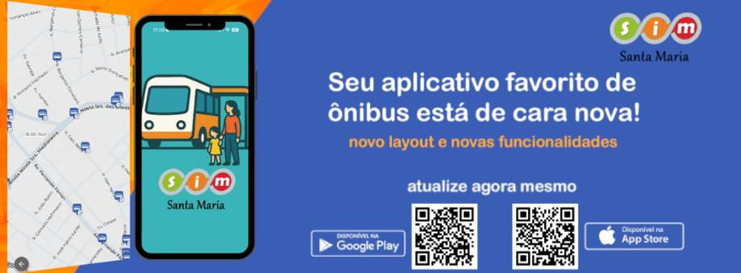

Cadastre a empresa
Informe CNPJ, razão social e os dados de contato do responsável.
ATU + SIM Santa Maria
Tenha transporte coletivo, serviços e informações do SIM na palma da mão. Resolva tudo de um jeito simples, rápido e seguro.

Aplicativo SIM Santa Maria
Planeje seus deslocamentos e acompanhe o transporte da cidade em um só lugar.
Para empresas
Faça o credenciamento e gerencie as recargas dos seus colaboradores pelo portal ATU.
Informe CNPJ, razão social e os dados de contato do responsável.
Tenha em mãos contrato social, cartão CNPJ e documento do responsável.
Com o acesso liberado, cadastre funcionários e compre os créditos.
Cartões SIM
Escolha a modalidade que combina com você e confira os documentos necessários no FAQ.
Perdeu ou roubaram seu cartão?
Entre no app SIM ou fale com a Central de Atendimento para bloquear o cartão imediatamente. Depois, solicite a segunda via com documento de identificação.
Perguntas frequentes
Encontre aqui os documentos e o passo a passo para solicitar cada modalidade de cartão.
Ver todos os canais de atendimentoFaça o cadastro no portal SIM, imprima o formulário e leve-o à ATU com comprovante de matrícula, CPF, documento de identidade e comprovante de endereço. Para menores de 16 anos, leve também o documento do responsável.
Realize o cadastro no portal SIM e compareça ao atendimento da ATU com documento de identificação e CPF. A equipe confirma os dados e orienta a retirada do cartão.
A empresa deve se cadastrar no portal ATU, enviar os dados cadastrais e cadastrar os funcionários. Após a liberação, é possível solicitar a compra de créditos e recargas.
Apresente documento de identidade e CPF no atendimento. A equipe orienta sobre o benefício, a emissão e os critérios aplicáveis à modalidade.
Procure o atendimento da ATU com documento de identificação, CPF e os documentos que comprovem a condição para análise do benefício. O atendimento informará as próximas etapas.
O responsável deve apresentar seu documento, o documento da criança e CPF, quando houver. No atendimento, serão explicados o cadastro, a emissão e o prazo para retirada.
Precisa falar com a ATU?
Para reclamações, denúncias e elogios, abra o aplicativo SIM e acesse o caminho Menu > Ouvidoria. Para outros assuntos, fale com a nossa equipe.